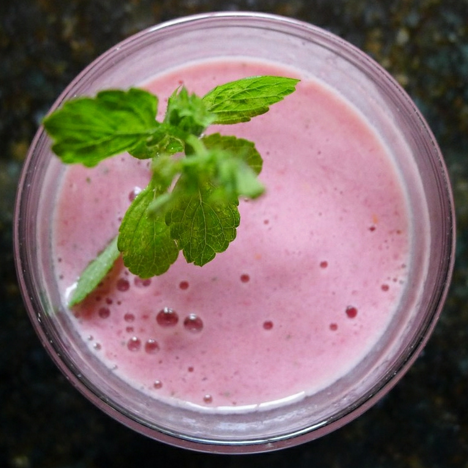

Recovery, Breakfast, Prep, By Claude
Per freezer pack (make 5)
1 ripe banana, sliced
1/2 cup frozen mixed berries (or tart cherries, which may help with soreness)
2 tablespoons rolled oats
1 small handful baby spinach (optional; you won't taste it)
To blend (per smoothie)
1 cup milk (2% or skim)
1 scoop whey protein (about 25g protein), vanilla or unflavored
1 teaspoon honey (optional; more carbs on long-run days)
Pinch of salt (helps replace sodium lost in sweat)
Protein and carbs after a run, ready in 2 minutes. Prep 5 bags of fruit and oats, then dump one in the blender with milk and whey.
Fill 5 zip bags or jars with the pack ingredients and freeze.
After a run: empty one pack into the blender. Add the milk, whey, honey, and salt.
Blend 45–60 seconds, adding a splash of water if too thick.
Have it within an hour or two of the run, ideally with a real meal a couple of hours later.
~420 CALORIES
35G PROTEIN
7G FAT
60G CARBS
6G FIBER
Photo: Mint leaf garnish for glass of raspberry smoothie (9351971660).jpg by Lori L. Stalteri from North of Boston, US, CC BY 2.0, via Wikimedia Commons. Representative image, not this exact recipe.
.jpg){kind=link}